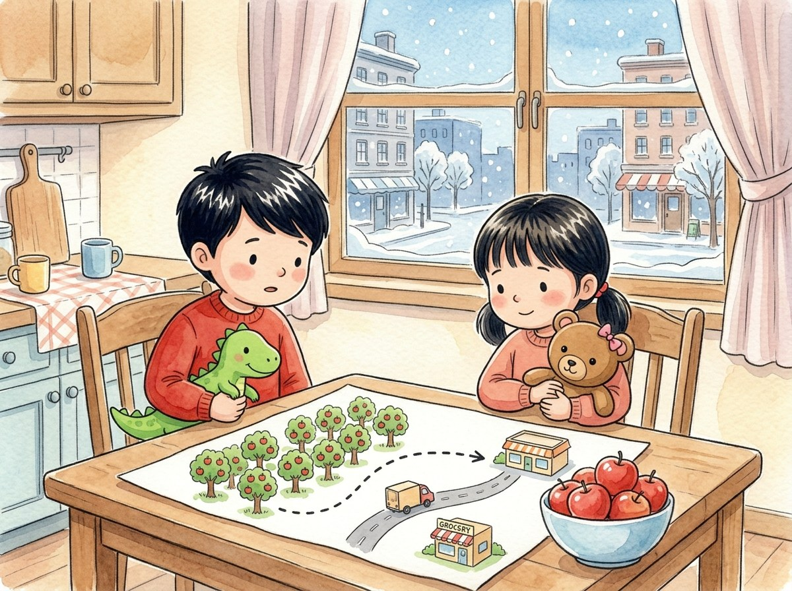

Kindergarten · Social studies · SS.K.G.1 · SS.K.G.2 · SS.K.G.3
The apples' trip
A story about winter, a map and some traveling apples.
Three new words
A drawing that shows where places are and how to get there.
A place with lots of fruit trees.
A big vehicle that carries things from one place to another.
Tap a picture to hear the word and what it means.
The story
In Chicago, winter is very cold. Today it is snowing.
Adrián and Génesis put on coats, hats and mittens to go play in the snow.
But in the summer, they wear shorts and go to the pool.
The weather changes what we do and what we wear.
When they come back in, they eat a red apple. "Where does it come from?" asks Adrián.
Grandma draws a map on a piece of paper.
Apples grow in an orchard, far away from the city.
A truck carries them down the road to the store.
On the map, a dotted line shows the way.
That's how apples travel from the orchard to our table.
Questions
Listen to the question and tap the right picture.
-
Question A. What do they wear to play in the snow?
It is cold, so they put on coats, hats and mittens.
-
Question B. Where do apples grow?
Apples grow in an orchard, far away from the city.
-
Question C. How do the apples get to the store?
A truck carries them down the road to the store.